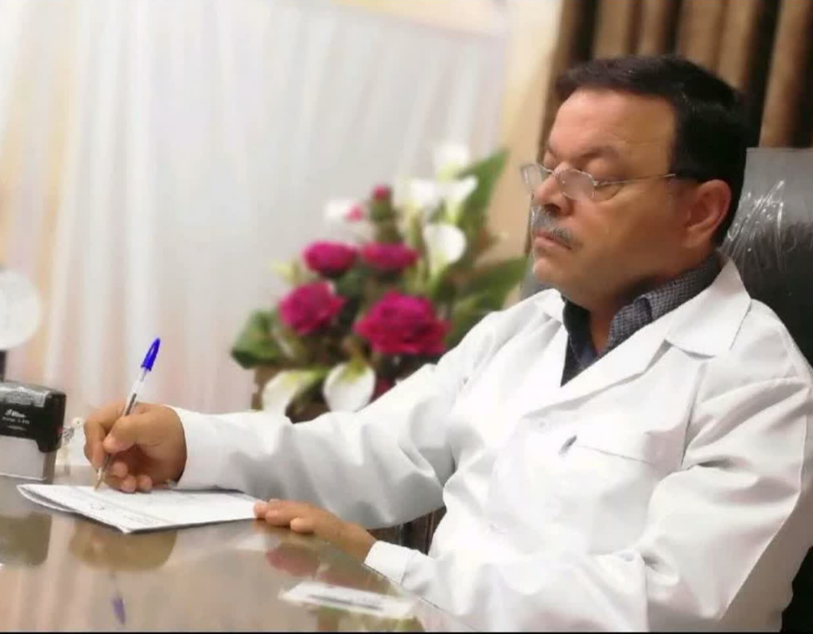
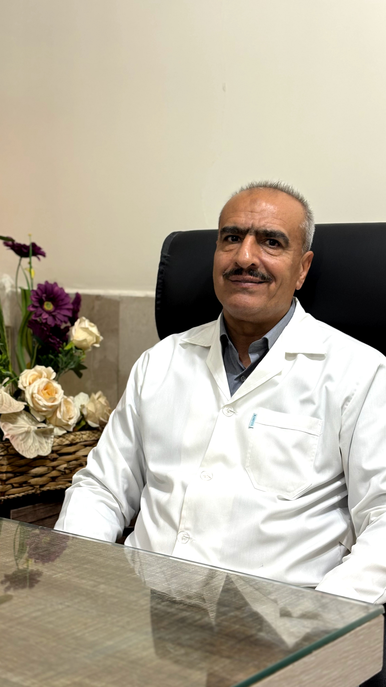
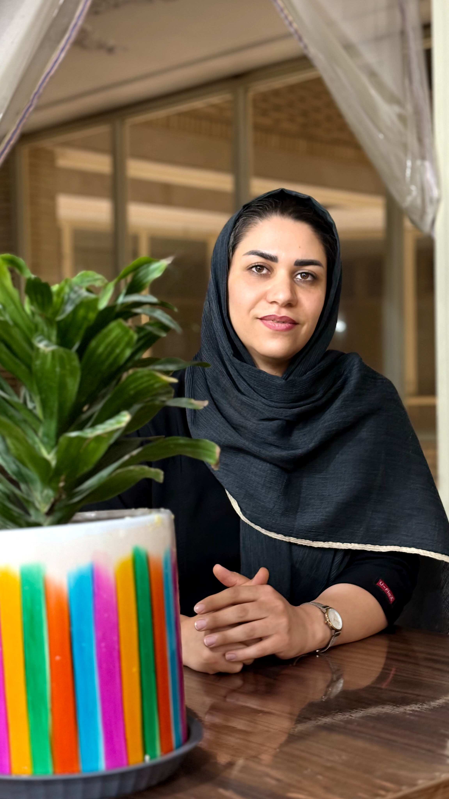

عضویت: نظام پزشکی ۳۸۸۸۱، عضو پیوسته انجمن علمی طب سنتی ایران.
سوابق: مدرس دانشگاه و دورههای بازآموزی پزشکان و پیراپزشکان. مولف کتاب و نویسنده مقالات مختلف فارسی و انگلیسی در حیطه طب سنتی ایران.
عناوین مقالات و تحقیقات:
تحصیلات:
دکترای حرفهای پزشکی از دانشگاه علوم پزشکی اصفهان (۱۳۷۱–۱۳۷۹).
دکترای تخصصی طب سنتی ایران از دانشگاه شاهد تهران (۱۳۸۹–۱۳۹۶).
پایاننامه دکتری: تبیین زکام و نزله در طب سنتی ایران و بررسی اثر شربت زوفا بر علائم بیماران مبتلا به رینیت آلرژیک.
سوابق اجرایی:
مقالات فارسی:
مقالات لاتین:
کارگاهها و کنگرهها:
مشخصات: تکنیکال ارتوپد، ارشد حرکات اصلاحی، هومیوپات، آکوپانچریست، دانشجوی PhD طب سنتی ارمنستان. نظام پزشکی: ۵۴۶-پ-۱
مهارتها: بیش از ده سال فعالیت حرفهای در حیطه طب سوزنی-سنتی (درمان بیش از ۶۰۰۰ بیمار در سال). درمانهای موفق و مستند در حیطه ناباروری زنان و مردان، گوارش، انواع درد، مفاصل، پوست، مشکلات دیسک، پارگی تاندون و رباط، مغز و اعصاب، چشم، گوش و حلق و بینی، کلیه و مجاری ادرار و...
تبحرها: تبحر در ۷ روش مختلف طب سوزنی، تبحر در تشخیص بیماریها از طریق نبض، زبان، گوش، چشم، کفبینی، تبحر در اعمال یداوی مختلف (حجامت، زالو، فصد، بادکش، ماساژ، سوجوک، جا اندازی اعضا و ناف، اوریکلوتراپی، امبدینگ).
عضویتها: عضو انجمن علمی ارتز و پروتز ایران، عضو فعال بسیج پزشکان و شرکت در اردوهای مختلف جهاد سازندگی بسیج پزشکان.
مقالات: